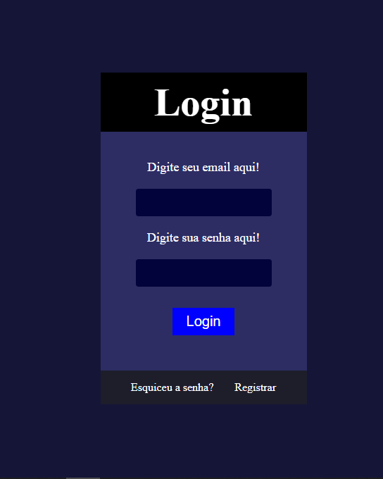
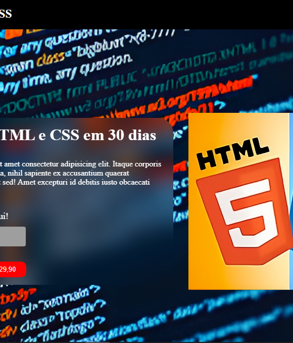
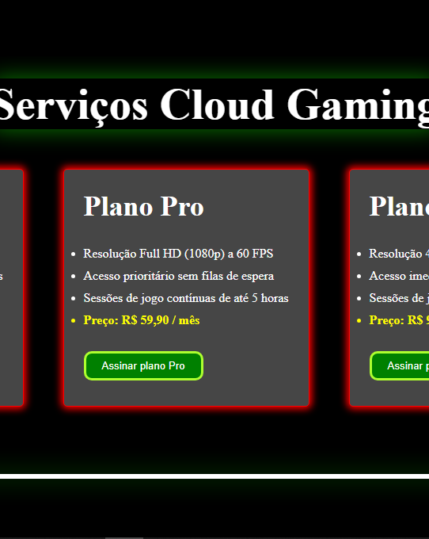
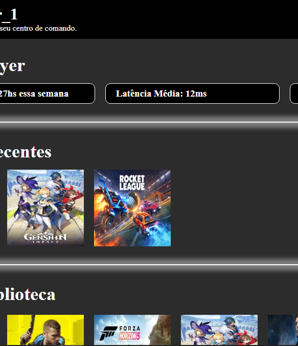
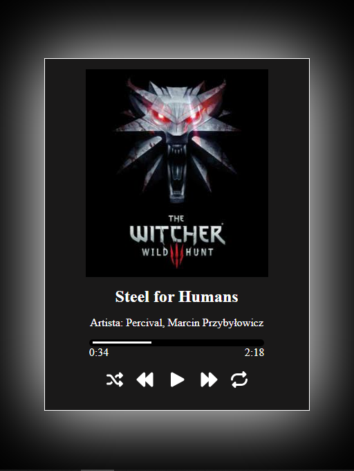
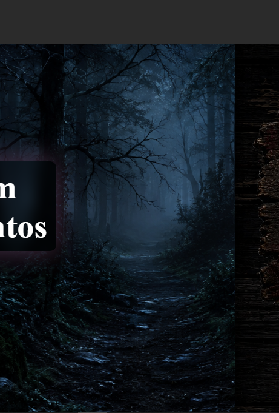
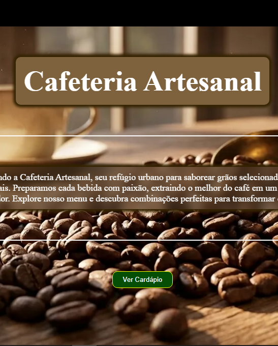
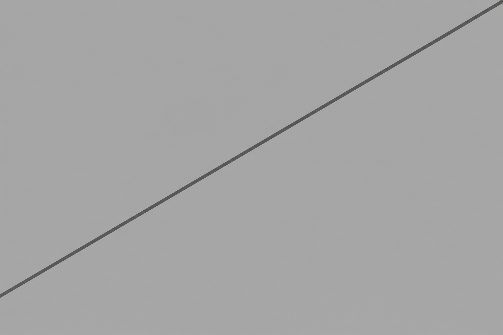

Linguagens
Em breve
Java Script
PHP
SQL
Práticas Feitas

Tela de Login
Detalhe
- Dia 03: Criando uma tela de login

Landing Page
Detalhe
- Dia 05: Criando uma landing page

Serviços Cloud Gaming
Detalhe
- Dia 06: Criando uma página de serviços cloud gaming
- Dia 07: adicionando uma galeria de jogos
- Dia 08: adicionando um FAQ para a página
- Dia 09: adicionando um header fixo e responsividade para celular
- Dia 10: Vortex Gaming concluído com Glassmorphism e polimento de botões

Dashboard Gamer
Detalhe
- Dia 11: Criando um dashboard gamer
- Dia 12: finalizando o Dashboard Gamer com biblioteca, perfil e configurações

Music Player
Detalhe
- Dia 13: Criando um Music Player
- Dia 14: ajustando a responsividade para telas menores
- Dia 15: adicionando efeito de glow no hover dos botões
- Dia 16: adicionando uma playlist para o Music Player
- Dia 17: adiciona estado ativo e alinha faixa principal com a playlist
- Dia 18: finalizando projeto com responsividade para telas maiores

Landing Page Gamer
Detalhe
- Dia 19: Criando uma landing page gamer
- Dia 20: sendo adicionada a seção de lançamentos dos jogos
- Dia 21: fazendo a seção de incrição VIP para os clientes
- Dia 22: estruturado footer de contatos
- Dia 23: ajustando o fundo das seções
- Dia 24: implementando responsividade para telas menores
- Dia 25: adicionando efeitos nos cards

Cafeteria Artesanal
Detalhe
- Dia 26: Criando uma landing page de uma cafeteria artesanal
- Dia 27: cria a seção Cardápio e estruturando seção de cafés
- Dia 28: estruturando seção de bebidas geladas
- Dia 29: estruturando seção de salgados e brunch
- Dia 30: estruturando seção de doces e sobremesas
- Dia 31: adicionando buttons e estilizando cards do cardápio
- Dia 32: adiciona secao de mapa e descricao de localizacao
- Dia 33: footer adicionado e finalizado
- Dia 34: estilizando fundo e sombras
- Dia 35: feita a responsividade da Cafeteria Artesanal

Calculadora
Detalhe
- Dia 36: fazendo uma calculadora